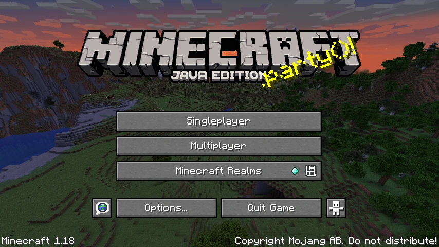
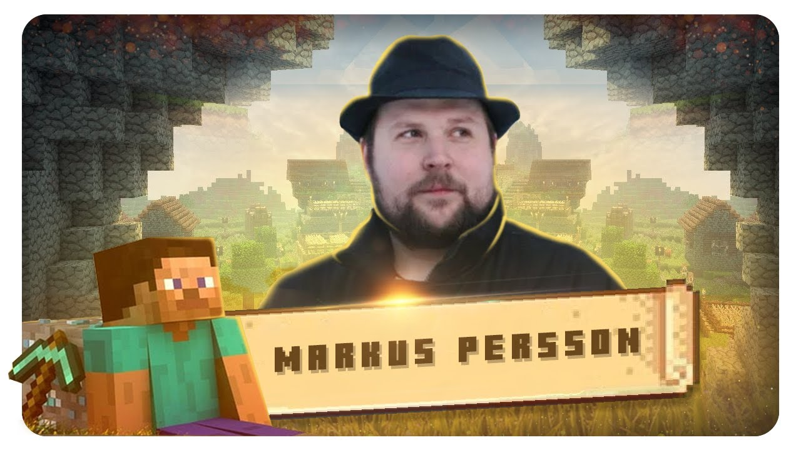

Os jogos mais jogados atualmente!
Minecraft
Minecraft é um dos maiores jogos da última década. O fenômeno independente tomou a indústria de surpresa e popularizou mecânicas de sobrevivência e criação de itens em vários outros games. O que muitos fãs do jogo talvez não saibam é que ele foi criado por apenas uma pessoa e se tornou o jogo mais vendido de todos os tempos.
Minecraft fecha 2019 sendo um dos jogos para PC mais populares da década, completou dez anos de existência e, depois de uma década, detém o título de jogo para PC mais rentável de todos os tempos. De interface simples e uma verdadeira febre entre adolescentes e pré adolescentes, é difícil acreditar que um jogo de blocos seja capaz de tamanha comoção. Para se ter uma ideia, canais no YouTube voltados para o conteúdo do game tornaram-se a opção favorita entre as crianças e não se espante caso uma delas trocarem televisão por gameplays de Minecraft.
Mas não pense que a sua popularidade seja qualquer impedimento, independente da faixa estária. Apesar da simplicidade qualquer pessoa pode jogar Minecraft, existem vários modos e a liberdade para deixar o jogo mais complexo, o que explica tamanha comoção. Criado na Suécia, em 2009, o game já estendeu seus domínios a 105 países e é jogado atualmente por mais de 100 milhões de pessoas.
Minecraft é um jogo eletrônico, que tem por objetivo básico construir e quebrar blocos. O jogo foi criado pelo sueco Markus Persson, lançado em 2011, inicialmente para PC e posteriormente para outras plataformas como Playstation 3, Playstation 4, Xbox 360 e Xbox One.
Os jogadores construíam apenas estruturas simples para se protegerem contra monstros noturnos, mas com o passar do tempo o jogo cresceu e os jogadores começaram a trabalhar em conjunto para criar coisas maravilhosas e surreais.
Conheça o criador do Minecraft
Toda a magia de Minecraft tem um grande mente por trás: Markus Persson, mais conhecido como Notch, um homem sueco que desde a infância encontrou na programação de jogos sua verdadeira paixão. A Mojang, assim que percebeu o potencial do Minecraft, abraçou a causa. Em um único dia, em 2011, logo depois da versão Beta ter sido lançada, a companhia vendeu cerca de um milhão de cópias do Minecraft. O jogo, por sua vez, não tinha nada de muito extraordinário, mas era extremamente divertido e interativo.
Em 2014, Carl Manneh, diretor da Mojang, e Notch, além do programador Jakob Porser, anunciaram que deixariam a empresa e a venderiam à Microsoft por US$ 2,5 bilhões. O segredo talvez seja que Notch não se veja como um grande homem de negócios. Hoje, depois de algumas atualizações, o game ainda continua no mesmo formato: cheio de blocos, só esperando por um jogador criativo que transformará uma pilha de figuras geométricas em um novo mundo. E não pense que os jogadores não são capazes de fazê-lo.
Ray Tracing e a magia do Minecraft
Uma das grandes novidades do Minecraft para esse ano com certeza fica com a implementação da técnica de Tracing em sistemas com placas de vídeo NVidia GeForce RTX. O que ele significa na prática é que, com o uso do Ray Tracing, um algoritmo faz com que seja possível simular a incidência de luz em objetos como no mundo real, resultando em algumas melhorias gráficas como iluminação direta do sol, sombras mais realistas e reflexos e efeitos de refração em materiais transparentes, como vidro e água.
A implementação do Ray Tracing é central ao que pensamos para o futuro de Minecraft. Na versão atual, um bloco de ouro parece amarelo, mas com essa melhoria ativada, você consegue ver brilho, reflexos, e até inimigos refletidos. O game está dando largos passos para conquistas novas, sem abandonar aquilo que o fez famoso em primeiro lugar.
Como o gráfico é simplório, inteiramente pixelado, é possível construir, recriar e navegar por esse ambiente durante anos sem o risco de ocorrência de bugs, os chamados erros técnicos que costumam surgir em jogos eletrônicos. Mais do que isso: sem deparar com fronteiras. O Ray Tracing só reforça ainda mais essas possibilidades e com a atualização dá passos largos para criar universos ainda mais interativos.
Fortnite

O que é o Fortnite e por que ele está em todo lugar? Fenômeno de vendas, audiência e popularidade, Fortnite é um dos títulos mais jogados do mundo na atualidade. É um dos títulos mais lucrativos do mercado, avaliado atualmente por US$ 28,7 bilhões.Uma das grandes sensações dos últimos anos nos esports, Fortnite é um jogo dos estúdios da Epic Games, na Carolina do Norte.
Ele possui dois principais modos de jogos, o Salve o Mundo que é um modo de jogo pago e o Battle Royale que pode ser jogado gratuitamente em qualquer plataforma inclusive em celulares.
Ainda que Fortnite seja um jogo relativamente recente, o game tem campeonatos a partir da realização da Copa do Mundo de Fortnite em 2019, a Epic Games deu outro rumo ao competitivo do game. O grande e principal campeonato do battle royale é a Fortnite Champions Series (FNCS), que geralmente tem a edição principal acontecendo uma vez por temporada e agracia os vencedores com uma compensação financeira robusta.
O começo de tudo
O Ponto Zero foi o começo de tudo em Fortnite. Assim como o “big bang”, uma explosão surgiu no meio do nada e gerou o Ponto Zero, uma fonte de poder e energia que conecta todas as realidades do universo.

Essa fonte deu origem à Realidade Zero, que é a realidade do jogo, e que pode ser usada como fonte de energia ou como ponte para outras realidades paralelas. É por isso que vemos vilões atacando a ilha e tentando roubar a energia do Ponto Zero — ou até mesmo personagens de outras franquias, como da Marvel ou até mesmo de Naruto. É assim que a Epic Games justifica o crossover de marcas.

Uma das organizações secretas que tenta usar o poder do Ponto Zero é a Ordem Imaginada. O objetivo do grupo é viajar entre realidades e mudar o curso da história ao seu bel-prazer — e, consequentemente, manter esse ciclo temporal e a realidade que conhecemos no game.
A ilha acaba sendo invadida por alguns vilões no decorrer da história, tornando-se palco de grandes batalhas. No entanto, dois confrontos específicos acabam desestabilizando o Ponto Zero no Capítulo 1 do game: as lutas contra o Rei do Gelo e o Prisioneiro do Fogo.
Na história, um robô gigante é criado para enfrentá-los; porém, para fazê-lo funcionar, foi necessário usar a energia do Ponto Zero. Por isso, o orbe se desestabiliza, formando um buraco negro na ilha que suga toda a realidade do game. O próprio jogo ficou inacessível por um período, exibindo apenas uma tela preta. Assim, iniciava-se o Capítulo 2 de Fortnite.
Curiosidades do jogo
- Levou seis anos para ser lançado, foi anunciado em 2011 e depois de atrasos e diversos testes foi lançado em 2017
- A famosa “dança do Fortnite” foi proibida em uma escola
- Faturou mais do que Vingadores: Guerra Infinita na semana do seu lançamento, Vingadores faturou US$ 250 milhões (R$ 1,3 bilhão) e na semana do lançamento o jogo lançou um evento com o tema do filme e faturou US$ 296 milhões (R$ 1,6 bilhão).
- É maior que a Netflix.
- Jogo de tiro mais popular na Twitch.
- Somente a versão mobile do jogo (para celular) rendeu mais de 1 milhão de dólares.
- O jogo foi o primeiro a aplicar o conceito de cross play, uma tecnologia onde um jogador do Playstation pode enfrentar um jogador do Xbox. A invenção inovadora influenciou outros desenvolvedores a realizarem o mesmo.
League Of Legends

O jogo League of Legends (LoL) foi publicado em 2009, pela Riot Games e, de lá pra cá, passou por muitas transformações. Entretanto, nem mesmo várias mudanças foram suficientes para diminuir o sucesso do jogo entre usuários.
Na verdade, LoL faz cada vez mais sucesso e chega a acumular até oito milhões de jogadores simultâneos por dia. Além disso, o jogo é fenômeno dos eSports, com campeonatos que reúnem centenas de milhares de espectadores.
A história do jogo, no entanto, começa alguns anos antes da publicação, quando a Riot decidiu investir no multiplayer online battle arena (MOBA).
Início de tudo

A princípio, os fundadores da Riot (Marc Merrill e Brandon Beck) chamavam o projeto de Onslaught. Ainda que o jogo estivesse uma “porcaria”, segundo o próprio Merrill, já trazia um modelo de negócios chamativo.
Os dois pensavam em lançar uma experiência focada no multiplayer online, sem planos para cópias físicas, sequências ou conteúdo extra em downloads (DLCs). Além disso, já queriam oferecer um jogo gratuito, com transações financeiras apenas como recurso opcional.
Sendo assim, a dupla teve dificuldade para encontrar uma publisher interessada em trabalhar com o jogo. Em 2008, então, o projeto foi renomeado para League of Legends: Clash of Fates e entrou em Alpha, dando início a um acordo com a empresa chinesa Tencent.
Avanço na Riot

O contrato com a Tencent deu à Riot um novo desafio. Isso porque a empresa passou anos desenvolvendo uma plataforma de tecnologia back-end que precisou ser descartada. Por causa disso, o lançamento de LoL acabou sendo adiado.
Em 2009, a nova plataforma foi concluída e o jogo foi lançado, no dia 27 de outubro. O subtítulo Clash of Fates, entretanto, foi removido e o nome ficou apenas League of Legends. O jogo foi lançado conforme o desejo inicial dos desenvolvedores: gratuito e online. Além disso, haviam 40 campeões disponíveis para os jogadores.
No início, o pico de jogadores chegava a 100 mil pessoas simultâneas, o que foi considerado um sucesso estrondoso. A empresa, então, abriu mais um rodada de investimentos e acumulou mais fundos para aplicar no jogo. Segundo Merrill, a experiência de desenvolver um jogo enquanto as pessoas já o conheciam era similar a de “construir um avião durante o voo”.
LOL nos eSports

Com o sucesso, a Riot decidiu que era hora de um novo passo para LoL: dar mais opções para os jogadores. Foi assim que o LoL ganhou novas atualizações com a inclusão de novos idiotas e novos campeões, além de mais mapas e uma história mais desenvolvida.
Por dois anos, o jogo recebeu novas melhorias focadas em melhorar a experiência de jogo até que a Riot decidiu investir no mercado de eSports. A transmissão de jogos competitivos na época se baseava em dois jogos principais: Counter Strike e StarCraft II.

Em 2011 o LoL teve seu primeiro evento competitivo, com mais de 100 mil espectadores simultâneos. Apesar do sucesso, os organizadores tinham uma estrutura simples com alguns computadores e cadeiras e não sabiam se a transmissão realmente atrairia a atenção do público.
No mundo mobile

O sucesso de LoL entre o público jogador e espectador dos campeonatos foi tamanho que o formato free to play do jogo passou a se tornar referência. É verdade que ele não foi o primeiro a apostar na ideia, mas ajudou a consolidar por conta da boa recepção.
Além disso, a Riot conseguiu eliminar boa parte dos investidores e focar na parceria com a Tencent. Por causa disso, a empresa pôde ter mais liberdade e independência para trabalhar no jogo.
Foram quase dez anos de atuação exclusivamente em LoL, até que a Riot decidiu que era hora de investir em novos produtos. Em 2020, por exemplo, foi lançado Valorant, jogo de tiro em primeira pessoa.
CrossFire

Cross Fire é um game de tiro em primeira pessoa no qual você se unir a um time de soldados para cumprir uma grande variedade de objetivos. Com uma jogabilidade e estilo gráfico que lembram bastante o clássico Counter-Strike, o título exige uma conexão constante com a internet para ser acessado.
Ao final de cada partida do game, você é recompensado com moedas e equipamentos que ajudam a aprimorar as habilidades de seu personagem. Uma loja interna criada pelos desenvolvedores permite que você invista as moedas coletadas em novos equipamentos, em uma lista que inclui granadas, coletes à prova de bala e metralhadoras, entre outros.
Mapas
Os mapas são vários campos de batalha onde ambas as facções estão lutando.Esses mapas oferecem vários temas e locais de todo o mundo e às vezes o céu é o limite e vale tudo.
Existem 5 categorias de mapas:
- PVP: Mapas para modos regulares
- PVE: Mapas para os modos Zombie e AI BOT
- Mutação: Mapas para o modos baseados em infecção
- Casual: Mapas para vários modos casuais
- Especial: Mapas para modos de armas limitadas

Como o Departamento de Defesa dos EUA decidiu desenvolver um interceptador de mísseis de última geração e construir uma base de mísseis de ponta, ainda mais evoluído, comparado com o que chamávamos de ‘high tech’. Grupos terroristas conseguiram dinheiro suficiente e requisitaram que Black List que explodisse esta base de mísseis secreta no México...

O porto fechado na Europa agora está operando novamente. O porto tem sido o lugar para negociações de petróleo por baixo da mesa entre países Europeus. Até recentemente, o porto estava fechado, mas agora foi aberto novamente devido a disputas contínuas dos países envolvidos. No entanto, um incidente fez com que os trabalhadores do porto evacuassem...

Localizada no coração de Anatolia, Ankara é a capital da República da Turquia, uma cidade que preserva arquitetura antiga e ruas estreitas do passado. No entanto, ao invés de risadas de crianças, tiros ecoam ao redor dessas ruas estreitas e cheias de construções. Maior parte das regiões da cidade já foram devastadas pelos ataques da Black List. Somente algumas áreas restaram, como a base de defesa da Global Risk, e a base militar Turca...

Agentes da Black List descobriram uma enorme base marinha pertencente a Global Risk. Para atacar essa base, a Black List precisa desarmar o sistema de radares da base marinha. A segurança da base marinha está em risco! A sombra da Black list está descendo sobre a Viúva Negra. Agentes da Global Risk foram enviados para pará-los...

Agentes da Black List descobriram uma operação submarina gigante, pertencente a Global Risk. Para atacar a base, Black List precisa primeiro desarmar o sistema de radares da base marinha, em uma sub-base externa. Enquanto Black List desce até a sub-base, Global Risk se apressa para intercepta-los! Para poder prevenir o ataque terrorista de Black List, a agencia de inteligência israelita Mosad requisitou os serviços da Global Risk...
Gameplay

CrossFire X traz partidas multiplayer online em rounds com estrutura semelhante ao Counter-Strike, onde equipes se enfrentam em diversos modos, entre eles Detonação, que envolve plantar bombas ou desarmá-las. O game oferece duas opções: o Moderno e Clássico. No modo Clássico, a jogabilidade é simplificada como no original do PC, enquanto em Moderno há mais opções, como usar a mira das armas para maior precisão.
s duas variações contam com o modo principal Detonação. Em Moderno, há ainda o modo Captura de Ponto, em que usuários precisam proteger um ponto de interesse até capturá-lo, além de, em breve, ser adicionado o modo Escolta. Já no Clássico, há o tradicional Mata-Mata em Equipe e o modo Spectre, onde uma equipe é composta por integrantes invisíveis com facas. Existe ainda a opção Nano, em que um infectado tenta contaminar os outros jogadores e torná-los parte de seu time.
Free Fire

O Free Fire é um dos games mobile mais jogados no mundo todo. Cerca de 50 milhões de usuários de Android e iOS jogam por dia, fazendo-o um dos Battle Royale mais jogados pelo celular, junto com PlayerUnknown's Battlegrounds (PUBG) e Fortnite.
Sucesso no Brasil, o jogo tem como origem o Vietnã. Na realidade, ele não foi criado pela Garena, gigante empresa de Singapura, mas sim por uma desenvolvedora tímida e pouco conhecida chamada 111dots Studio.
E não é mera coincidência suas primeiras grandes comunidades de gamers terem surgido no sul da Ásia e também no Brasil. Atualmente o país conta competitivo movimentado. A Liga Brasileira de Free Fire é a competição oficial do mobile, e conta com três divisões: a principal, a liga de acesso à elite (Série B) e a terceira divisão (Série C).
A 111dots Studio lançou a versão beta de Free Fire Battlegrounds em 28 de setembro de 2017 apenas para os servidores vietnamitas. A intenção do jogo era competir com outra desenvolvedora local, a Horus Entertainment, que havia lançado a versão beta de Bullet Strike: Battlegrounds poucos dias antes. Ambas as desenvolvedoras buscavam replicar o sucesso de PUBG no país, lançando game mobiles de Battle Royale.
Forrest Li, o CEO da Garena e um dos homens mais ricos do mundo (fortuna estimada em U$ 545 milhões, cerca de R$ 3,8 bilhões) estava atento ao mercado sul-asiático e rapidamente adquiriu os direitos de publicação do Free Fire Battlegrounds. Pela primeira vez sua empresa foi parte do desenvolvimento de um jogo: o Garena Free Fire, lançado em 4 de dezembro de 2017.
Forrest Li, que homenageou o filme “Forrest Gump” ao escolher este nome durante sua graduação em Stanford, na California, se mostra um homem de visão. Não é por acaso que se tornou o segundo no mundo a ficar bilionário com a indústria dos videogames, depois de Tim Sweeney, da Epic Games (Fortnite). A 111dots, que até hoje não lançou outro título além de Free Fire, continua participando do desenvolvimento do jogo, e ainda é sede do servidor vietnamita.

Forrest Li, o CEO da Garena e um dos homens mais ricos do mundo (fortuna estimada em U$ 545 milhões, cerca de R$ 3,8 bilhões) estava atento ao mercado sul-asiático e rapidamente adquiriu os direitos de publicação do Free Fire Battlegrounds. Pela primeira vez sua empresa foi parte do desenvolvimento de um jogo: o Garena Free Fire, lançado em 4 de dezembro de 2017.
Forrest Li, que homenageou o filme “Forrest Gump” ao escolher este nome durante sua graduação em Stanford, na California, se mostra um homem de visão. Não é por acaso que se tornou o segundo no mundo a ficar bilionário com a indústria dos videogames, depois de Tim Sweeney, da Epic Games (Fortnite).
A 111dots, que até hoje não lançou outro título além de Free Fire, continua participando do desenvolvimento do jogo, e ainda é sede do servidor vietnamita.
Sucesso imediato

O Brasil é um dos líderes em integrantes da comunidade do Free Fire, que foi o jogo mais baixado para smartphones brasileiros em 2018. Para se ter uma ideia, na América Latina existe um servidor exclusivo para o Brasil e outro para os países como Argentina, México e Colômbia.
O país também já foi lembrado dentro do jogo, com dois personagens brasileiros: Miguel, inspirado no Capitão Nascimento, personagem principal do filme “Tropa de Elite” e Alok, inspirado no famoso DJ. Além disso, o mapa Purgatório conta com um local chamado “Brasília”.
O DJ Alok inclusive será a atração da abertura da Copa do Mundo de Free Fire, que acontecerá dia 16 de novembro no Rio de Janeiro. O Brasil é uma das potências do competitivo do mobile game e conta com uma liga nacional estruturada e de sucesso.

Cenário competitivo no Brasil
O cenário competitivo do Free Fire no Brasil também merece destaque, por ter sido um dos primeiros do jogo e um dos mais organizados do e-sports brasileiro. Na sua primeira temporada da Pro League, a Tropa M3C superou outras onze equipes na fase final e foi a primeira campeã brasileira do jogo de Battle Royale.
Conquistou assim o direito de disputar a Copa do Mundo de Free Fire, além de R$ 13 mil como premiação. A GPS Veteranos conquistou o vice campeonato e também se classificou para o mundial na Tailândia.
Ariano “Kroonos” Ferreira, da M3C, foi eleito o melhor jogador do torneio. Depois disso a competição teve rebranding e passou a se chamar Liga Brasileira de Free Fire (LBFF). Até o momento foram realizadas três edições, cujos campeões foram Team Liquid, SS e Fluxo.

O sucesso da primeira temporada logo fez com que o interesse dos grandes organizações de eSports do país se voltasse para o Free Fire. Nomes como INTZ (terceira colocada da Pro League Season 1), Vivo Keyd (que contratou Kroonos para sua guilda) e até mesmo o Corinthians investiram em guildas de Free Fire para competir na modalidade.